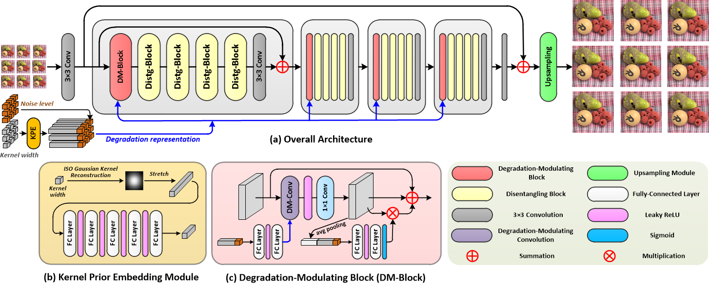
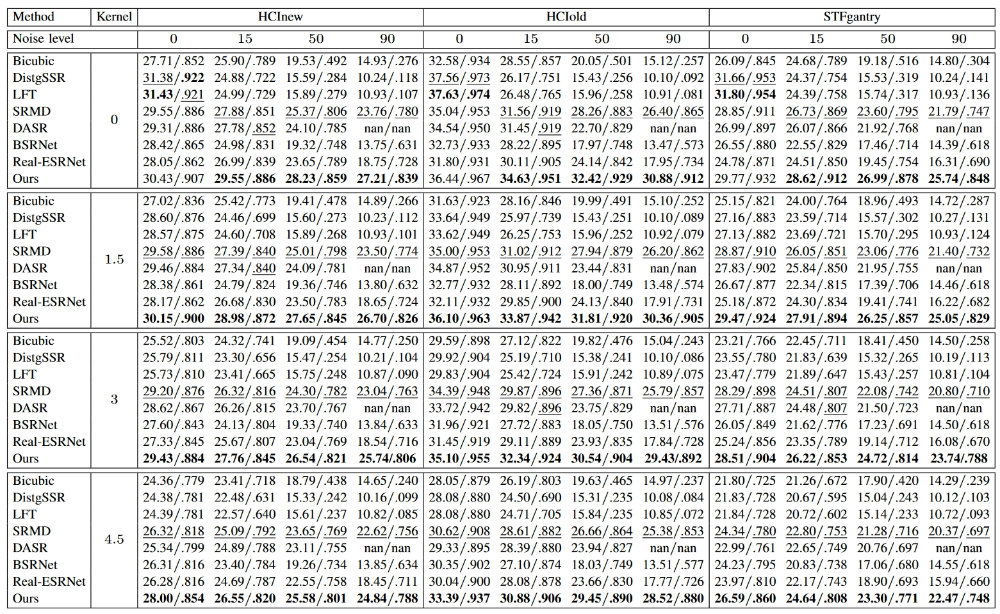
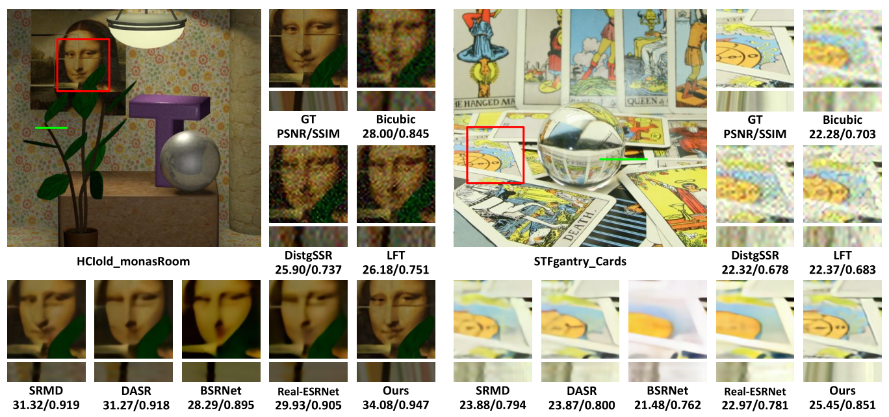
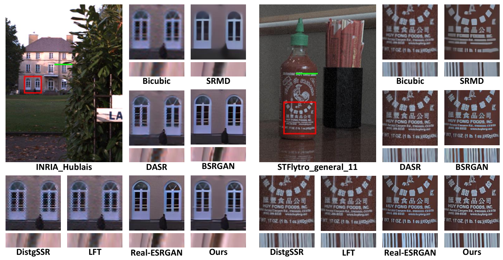
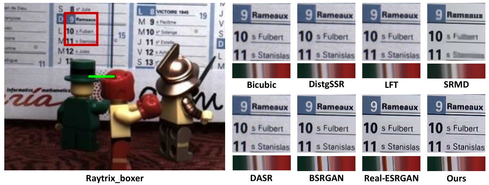

Real-World Light Field Image Super-Resolution via
Degradation Modulation
Yingqian Wang, Zhengyu Liang, Longguang Wang, Jungang Yang, Wei An, Yulan Guo
College of Electronic Science and Technology, National University of Defense Technology.
 |
|---|
Abstract
Recent years have witnessed the great advances of deep neural networks (DNNs) in light field (LF) image super-resolution (SR). However, existing DNN-based LF image SR methods are developed on a single fixed degradation (e.g., bicubic downsampling), and thus cannot be applied to super-resolve real LF images with diverse degradation. In this paper, we propose a simple yet effective method for real-world LF image SR. In our method, a practical LF degradation model is developed to formulate the degradation process of real LF images. Then, a convolutional neural network is designed to incorporate the degradation prior into the SR process. By training on LF images using our formulated degradation, our network can learn to modulate different degradation while incorporating both spatial and angular information in LF images. Extensive experiments on both synthetically degraded and real-world LF images demonstrate the effectiveness of our method. Compared with existing state-of-the-art single and LF image SR methods, our method achieves superior SR performance under a wide range of degradation, and generalizes better to real LF images.
Network Architecture
|  |
|---|
Quantitative Results
Table 1: PSNR and SSIM results achieved by different methods on the HCInew, HCIold and STFgantry datasets under synthetic degradations (with different blur kernel widths and noise levels). Note that, the degradation degenerates to the bicubic downsampling degradation when kernel width and noise level equal to 0.
|  |
|---|
Qualitative Results
|  |
|---|
Fig. 4: Visual results achieved by different methods on synthetically degraded LFs (kernel width = 1.5, noise level = 15) for 4×SR. The super-resolved center view images and horizontal EPIs are shown. The PSNR and SSIM scores on the presented scenes are reported below the zoom-in regions.
|  |
|---|
Fig. 5: Visual results achieved by different methods on real LFs captured by Lytro Illum cameras for 4×SR. Scenes Hublais from the INRIA dataset and general_11 from the STFlytro dataset are used as example scenes for comparison. The super-resolved center view images and horizontal EPIs are shown. For SRMD and our method, the input blur kernel width and noise level are set to 2 and 30, respectively. Groundtruth HR images are unavailable in this case.
|  |
|---|
Fig. 6: Visual results achieved by different methods on real LFs captured by a Raytrix camera for 4×SR. The super-resolved center view images and horizontal EPIs are shown. For SRMD and our method, the input blur kernel width and noise level are set to 4 and 60, respectively. Groundtruth HR images are unavailable in this case.
Performance Comparison via Videos
Online Interactive Demo
We develop an online interactive demo to show the real-world SR performance with respect to input degradations. You can adjust the input kernel widths and noise levels by dragging the sliding blocks to understand their influence to the SR results.


Noise Level
Kernel Width


Noise Level
Kernel Width


Noise Level
Kernel Width
Materials

Citation
@Article{LF-DMnet,
author = {Wang, Yingqian and Liang, Zhengyu and Wang, Longguang and Yang, Jungang and An, Wei and Guo, Yulan},
title = {Real-World Light Field Image Super-Resolution via Degradation Modulation},
journal = {arxiv},
year = {2023}
}